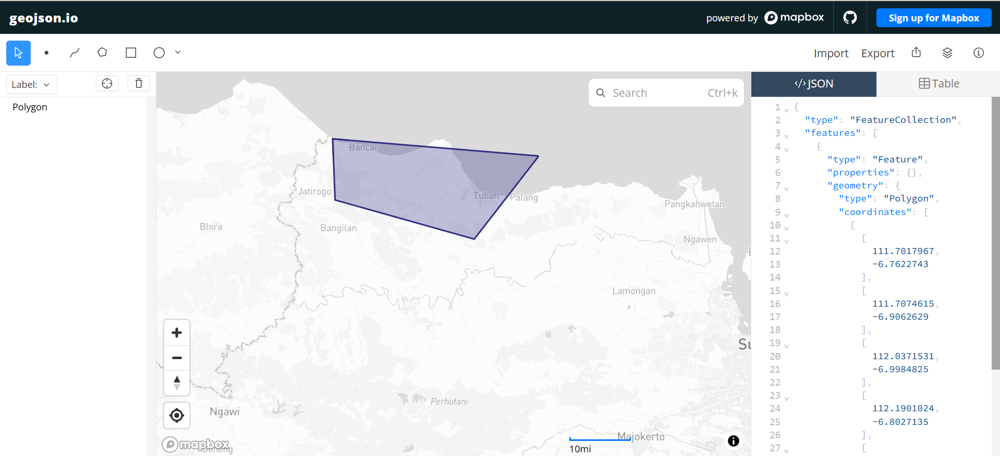
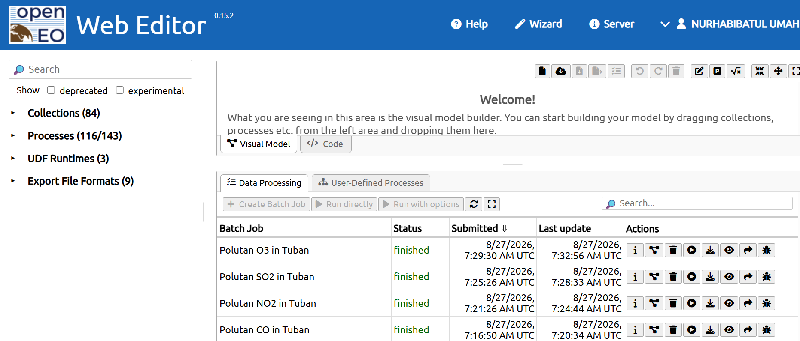
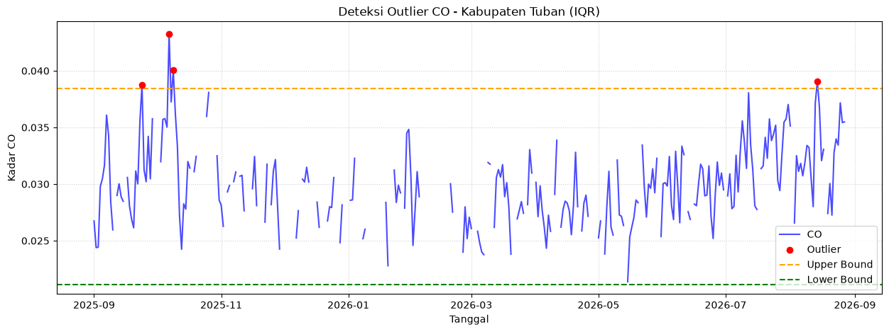
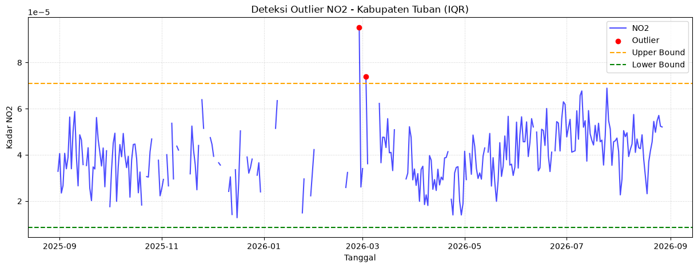
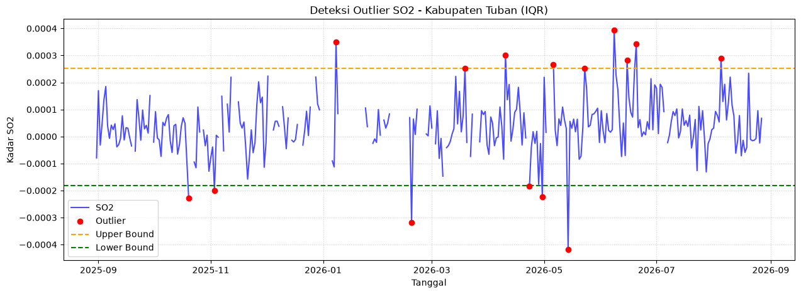
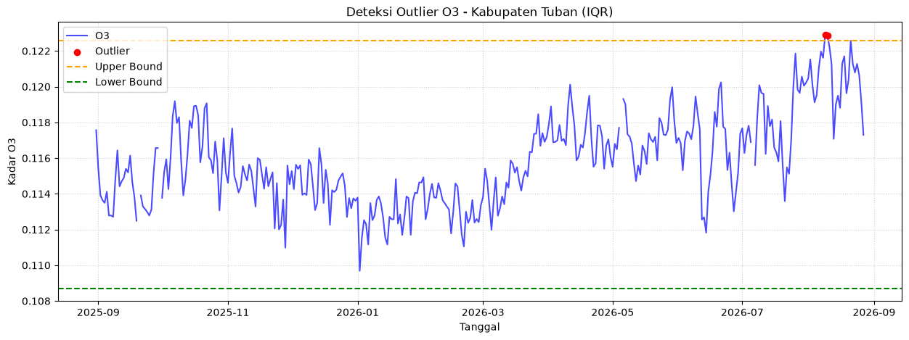

Kualitas Polusi Udara di Daerah Tuban#
Latar Belakang#
Udara merupakan komponen ekosistem yang sangat vital bagi kelangsungan hidup manusia dan makhluk hidup lainnya. Namun, seiring dengan pesatnya pertumbuhan ekonomi dan pembangunan wilayah, kualitas udara menghadapi tantangan besar akibat meningkatnya polusi.
Kabupaten Tuban dikenal sebagai salah satu pusat pertumbuhan industri dan ekonomi strategis di jalur Pantura Jawa Timur. Wilayah Tuban menjadi pusat dari berbagai aktivitas industri skala besar, mulai dari industri semen (PT Semen Indonesia/Solusi Bangun Indonesia), kawasan kilang minyak, aktivitas pertambangan batu kapur/tambang mineral, hingga industri manufaktur dan pergudangan pendukung.
Selain sektor industri, mobilitas transportasi darat di jalur logistik utama pantura serta aktivitas perkotaan turut menyumbang emisi gas kendaraan bermotor (seperti \(CO\), \(NO_2\), dan partikulat debu) Emisi dari cerobong asap pabrik, debu aktivitas industri, dan gas buang kendaraan melepaskan berbagai polutan berbahaya ke udara bebas, seperti Particulate Matter (\(PM_{2.5}\) dan \(PM_{10}\)), Karbon Monoksida (\(CO\)), Nitrogen Dioksida (\(NO_2\)), Sulfur Dioksida (\(SO_2\)), dan Ozone (\(O_3\)).
Oleh karena itu, dalam tugas ini, dilakukan proses pengumpulan data (crawling) historis kualitas udara di wilayah Kabupaten Tuban dalam rentang waktu 1 tahun terakhir hingga 31 Agustus 2026.
Bussiness Understanding#
1. Tujuan#
Tujuan utama dari analisis ini adalah untuk mengetahui, mengukur, dan memetakan tingkat serta tren kualitas udara di wilayah Kabupaten Tuban secara objektif. Analisis ini berfokus pada pengolahan data historis polusi udara meliputi parameter/fitur seperti \(PM_{2.5}\), \(PM_{10}\), \(CO\), \(NO_2\), \(SO_2\), dan \(O_3\) selama satu tahun terakhir hingga 31 Agustus 2026.
Melalui pemanfaatan teknik crawling data dan visualisasi time series, analisis ini bertujuan untuk melihat pola tingkat polusi dan mengidentifikasi titik-titik waktu di mana kualitas udara mengalami penurunan yang signifikan di wilayah Tuban.
2. Manfaat#
Hasil dari analisis kualitas udara ini diharapkan dapat memberikan berbagai manfaat , antara lain:
a. Memberikan informasi yang transparan dan mudah diakses mengenai kondisi kebersihan udara harian di Tuban, sehingga masyarakat dapat mengambil langkah pencegahan yang tepat (seperti menggunakan masker atau membatasi aktivitas luar ruangan saat indeks polusi tinggi)
b. Menjadi bahan masukan, referensi empiris, dan data pendukung bagi pemerintah dalam mengevaluasi kebijakan pengendalian emisi, baik dari sektor industri berat, pertambangan, maupun sektor transportasi darat di Kabupaten Tuban
c. Menyelesaikan tugas analisis pada matakuliah Proyek Sains Data
Data Understanding#
Tahap Data Understanding bertujuan untuk mengenali, mengeksplorasi, dan memahami karakteristik data yang telah dikumpulkan sebelum ke tahap analisis.
1. Sumber Data dan Batasan Wilayah#
Data historis kualitas udara diambil melalui API penyedia data lingkungan dan cuaca global yang valid. Pada data yang diambil terdapat parameter/fitur polutan seperti \(PM_{2.5}\), \(PM_{10}\), \(CO\), \(NO_2\), \(SO_2\), dan \(O_3\). Tetapi untuk parameter \(PM_{2.5}\) dan \(PM_{10}\) tidak dapat diukur secara langsung oleh satelit observasi kolom atmosfer murni (seperti Sentinel-5P)
Untuk memastikan spesifik titik pengambilan data hanya mencakup wilayah Kabupaten Tuban maka titik koordinat diambil menggunakan GeoJson. Rentang waktu data yang ditarik mencakup catatan historis selama satu tahun ke belakang hingga batas akhir tanggal 31 Agustus 2026.
Batasan Wilayah#
Untuk batasan wilayah yang diambil adalah seperti gambar di bawah ini. Titik koordinat wilayah yang diambil nantinya digunakan untuk crawling data. Setelah mendapatkan titik koordinat sesuai wilayah langkah selanjutnya mengambil data.

Pengambilan Data#
Dokumentasi pengambilan data: https://documentation.dataspace.copernicus.eu/notebook-samples/openeo/NO2Covid.html
Note: Buat akun di website copernicus, lalu access JupyterLab dan pilih Python 3 (ipykernel)
1. Install Library#
pip install openeo
Requirement already satisfied: openeo in c:\users\lenovo\.pyenv\pyenv-win\versions\3.12.10\lib\site-packages (0.50.0)
Requirement already satisfied: requests>=2.26.0 in c:\users\lenovo\.pyenv\pyenv-win\versions\3.12.10\lib\site-packages (from openeo) (2.32.5)
Requirement already satisfied: urllib3>=1.9.0 in c:\users\lenovo\.pyenv\pyenv-win\versions\3.12.10\lib\site-packages (from openeo) (2.6.3)
Requirement already satisfied: shapely>=1.6.4 in c:\users\lenovo\.pyenv\pyenv-win\versions\3.12.10\lib\site-packages (from openeo) (2.1.2)
Requirement already satisfied: numpy>=1.17.0 in c:\users\lenovo\.pyenv\pyenv-win\versions\3.12.10\lib\site-packages (from openeo) (2.4.2)
Requirement already satisfied: xarray<2025.01.2,>=0.12.3 in c:\users\lenovo\.pyenv\pyenv-win\versions\3.12.10\lib\site-packages (from openeo) (2025.1.1)
Requirement already satisfied: pandas<3.0.0,>0.20.0 in c:\users\lenovo\.pyenv\pyenv-win\versions\3.12.10\lib\site-packages (from openeo) (2.2.2)
Requirement already satisfied: pystac>=1.5.0 in c:\users\lenovo\.pyenv\pyenv-win\versions\3.12.10\lib\site-packages (from openeo) (1.14.3)
Requirement already satisfied: deprecated>=1.2.12 in c:\users\lenovo\.pyenv\pyenv-win\versions\3.12.10\lib\site-packages (from openeo) (1.3.1)
Requirement already satisfied: oschmod>=0.3.12 in c:\users\lenovo\.pyenv\pyenv-win\versions\3.12.10\lib\site-packages (from openeo) (0.3.12)
Requirement already satisfied: geopandas>=0.14 in c:\users\lenovo\.pyenv\pyenv-win\versions\3.12.10\lib\site-packages (from openeo) (1.1.3)
Requirement already satisfied: wrapt<3,>=1.10 in c:\users\lenovo\.pyenv\pyenv-win\versions\3.12.10\lib\site-packages (from deprecated>=1.2.12->openeo) (2.2.1)
Requirement already satisfied: pyogrio>=0.7.2 in c:\users\lenovo\.pyenv\pyenv-win\versions\3.12.10\lib\site-packages (from geopandas>=0.14->openeo) (0.12.1)
Requirement already satisfied: packaging in c:\users\lenovo\.pyenv\pyenv-win\versions\3.12.10\lib\site-packages (from geopandas>=0.14->openeo) (26.0)
Requirement already satisfied: pyproj>=3.5.0 in c:\users\lenovo\.pyenv\pyenv-win\versions\3.12.10\lib\site-packages (from geopandas>=0.14->openeo) (3.7.2)
Requirement already satisfied: pywin32 in c:\users\lenovo\.pyenv\pyenv-win\versions\3.12.10\lib\site-packages (from oschmod>=0.3.12->openeo) (311)
Requirement already satisfied: python-dateutil>=2.8.2 in c:\users\lenovo\.pyenv\pyenv-win\versions\3.12.10\lib\site-packages (from pandas<3.0.0,>0.20.0->openeo) (2.9.0.post0)
Requirement already satisfied: pytz>=2020.1 in c:\users\lenovo\.pyenv\pyenv-win\versions\3.12.10\lib\site-packages (from pandas<3.0.0,>0.20.0->openeo) (2026.2)
Requirement already satisfied: tzdata>=2022.7 in c:\users\lenovo\.pyenv\pyenv-win\versions\3.12.10\lib\site-packages (from pandas<3.0.0,>0.20.0->openeo) (2025.3)
Requirement already satisfied: charset_normalizer<4,>=2 in c:\users\lenovo\.pyenv\pyenv-win\versions\3.12.10\lib\site-packages (from requests>=2.26.0->openeo) (3.4.4)
Requirement already satisfied: idna<4,>=2.5 in c:\users\lenovo\.pyenv\pyenv-win\versions\3.12.10\lib\site-packages (from requests>=2.26.0->openeo) (3.11)
Requirement already satisfied: certifi>=2017.4.17 in c:\users\lenovo\.pyenv\pyenv-win\versions\3.12.10\lib\site-packages (from requests>=2.26.0->openeo) (2026.1.4)
Requirement already satisfied: six>=1.5 in c:\users\lenovo\.pyenv\pyenv-win\versions\3.12.10\lib\site-packages (from python-dateutil>=2.8.2->pandas<3.0.0,>0.20.0->openeo) (1.17.0)
Note: you may need to restart the kernel to use updated packages.
WARNING: Ignoring invalid distribution ~andas (C:\Users\LENOVO\.pyenv\pyenv-win\versions\3.12.10\Lib\site-packages)
WARNING: Ignoring invalid distribution ~andas (C:\Users\LENOVO\.pyenv\pyenv-win\versions\3.12.10\Lib\site-packages)
WARNING: Ignoring invalid distribution ~andas (C:\Users\LENOVO\.pyenv\pyenv-win\versions\3.12.10\Lib\site-packages)
[notice] A new release of pip is available: 25.0.1 -> 26.2.1
[notice] To update, run: python.exe -m pip install --upgrade pip
2. Import Library#
Setelah proses instalasi selesai, kita memuat (import) library openeo ke dalam environment Python agar siap digunakan.
import openeo
3. Autentikasi dan Koneksi ke Copernicus Data Space#
Lakukan koneksi dan autentikasi ke server openeo.dataspace.copernicus.eu menggunakan sistem OIDC (OpenID Connect). Ikuti tautan yang muncul dan masukkan kode untuk menyelesaikan proses autentikasi.
connection = openeo.connect("openeo.dataspace.copernicus.eu").authenticate_oidc()
[##################################---] ⌛ Polling---------------------------------------------------------------------------
KeyboardInterrupt Traceback (most recent call last)
Cell In[3], line 1
----> 1 connection = openeo.connect("openeo.dataspace.copernicus.eu").authenticate_oidc()
File ~\.pyenv\pyenv-win\versions\3.12.10\Lib\site-packages\openeo\rest\connection.py:689, in Connection.authenticate_oidc(self, provider_id, client_id, client_secret, store_refresh_token, use_pkce, display, max_poll_time)
685 _log.info("Trying device code flow.")
686 authenticator = OidcDeviceAuthenticator(
687 client_info=client_info, use_pkce=use_pkce, display=display, max_poll_time=max_poll_time
688 )
--> 689 con = self._authenticate_oidc(
690 authenticator,
691 provider_id=provider_id,
692 store_refresh_token=store_refresh_token,
693 # TODO: expose `auto_renew_from_refresh_token` directly as option instead of reusing `store_refresh_token` arg?
694 auto_renew_from_refresh_token=store_refresh_token,
695 )
696 print("Authenticated using device code flow.")
697 return con
File ~\.pyenv\pyenv-win\versions\3.12.10\Lib\site-packages\openeo\rest\connection.py:405, in Connection._authenticate_oidc(self, authenticator, provider_id, store_refresh_token, auto_renew_from_refresh_token, fallback_refresh_token, oidc_auth_renewer)
401 """
402 Authenticate through OIDC and set up bearer token (based on OIDC access_token) for further requests.
403 """
404 request_refresh_token = store_refresh_token or (not oidc_auth_renewer and auto_renew_from_refresh_token)
--> 405 tokens = authenticator.get_tokens(request_refresh_token=request_refresh_token)
406 _log.info("Obtained tokens: {t}".format(t=[k for k, v in tokens._asdict().items() if v]))
408 refresh_token = tokens.refresh_token or fallback_refresh_token
File ~\.pyenv\pyenv-win\versions\3.12.10\Lib\site-packages\openeo\rest\auth\oidc.py:936, in OidcDeviceAuthenticator.get_tokens(self, request_refresh_token)
934 poll_ui.show_progress(status="Polling")
935 # TODO: skip occasional failing requests? (e.g. see `SkipIntermittentFailures` from openeo-aggregator)
--> 936 resp = self._requests.post(url=token_endpoint, data=post_data, timeout=5)
937 if resp.status_code == 200:
938 log.info(f"[{elapsed():5.1f}s] Authorized successfully.")
File ~\.pyenv\pyenv-win\versions\3.12.10\Lib\site-packages\requests\sessions.py:637, in Session.post(self, url, data, json, **kwargs)
626 def post(self, url, data=None, json=None, **kwargs):
627 r"""Sends a POST request. Returns :class:`Response` object.
628
629 :param url: URL for the new :class:`Request` object.
(...) 634 :rtype: requests.Response
635 """
--> 637 return self.request("POST", url, data=data, json=json, **kwargs)
File ~\.pyenv\pyenv-win\versions\3.12.10\Lib\site-packages\requests\sessions.py:589, in Session.request(self, method, url, params, data, headers, cookies, files, auth, timeout, allow_redirects, proxies, hooks, stream, verify, cert, json)
584 send_kwargs = {
585 "timeout": timeout,
586 "allow_redirects": allow_redirects,
587 }
588 send_kwargs.update(settings)
--> 589 resp = self.send(prep, **send_kwargs)
591 return resp
File ~\.pyenv\pyenv-win\versions\3.12.10\Lib\site-packages\requests\sessions.py:703, in Session.send(self, request, **kwargs)
700 start = preferred_clock()
702 # Send the request
--> 703 r = adapter.send(request, **kwargs)
705 # Total elapsed time of the request (approximately)
706 elapsed = preferred_clock() - start
File ~\.pyenv\pyenv-win\versions\3.12.10\Lib\site-packages\requests\adapters.py:644, in HTTPAdapter.send(self, request, stream, timeout, verify, cert, proxies)
641 timeout = TimeoutSauce(connect=timeout, read=timeout)
643 try:
--> 644 resp = conn.urlopen(
645 method=request.method,
646 url=url,
647 body=request.body,
648 headers=request.headers,
649 redirect=False,
650 assert_same_host=False,
651 preload_content=False,
652 decode_content=False,
653 retries=self.max_retries,
654 timeout=timeout,
655 chunked=chunked,
656 )
658 except (ProtocolError, OSError) as err:
659 raise ConnectionError(err, request=request)
File ~\.pyenv\pyenv-win\versions\3.12.10\Lib\site-packages\urllib3\connectionpool.py:787, in HTTPConnectionPool.urlopen(self, method, url, body, headers, retries, redirect, assert_same_host, timeout, pool_timeout, release_conn, chunked, body_pos, preload_content, decode_content, **response_kw)
784 response_conn = conn if not release_conn else None
786 # Make the request on the HTTPConnection object
--> 787 response = self._make_request(
788 conn,
789 method,
790 url,
791 timeout=timeout_obj,
792 body=body,
793 headers=headers,
794 chunked=chunked,
795 retries=retries,
796 response_conn=response_conn,
797 preload_content=preload_content,
798 decode_content=decode_content,
799 **response_kw,
800 )
802 # Everything went great!
803 clean_exit = True
File ~\.pyenv\pyenv-win\versions\3.12.10\Lib\site-packages\urllib3\connectionpool.py:534, in HTTPConnectionPool._make_request(self, conn, method, url, body, headers, retries, timeout, chunked, response_conn, preload_content, decode_content, enforce_content_length)
532 # Receive the response from the server
533 try:
--> 534 response = conn.getresponse()
535 except (BaseSSLError, OSError) as e:
536 self._raise_timeout(err=e, url=url, timeout_value=read_timeout)
File ~\.pyenv\pyenv-win\versions\3.12.10\Lib\site-packages\urllib3\connection.py:571, in HTTPConnection.getresponse(self)
568 _shutdown = getattr(self.sock, "shutdown", None)
570 # Get the response from http.client.HTTPConnection
--> 571 httplib_response = super().getresponse()
573 try:
574 assert_header_parsing(httplib_response.msg)
File ~\.pyenv\pyenv-win\versions\3.12.10\Lib\http\client.py:1430, in HTTPConnection.getresponse(self)
1428 try:
1429 try:
-> 1430 response.begin()
1431 except ConnectionError:
1432 self.close()
File ~\.pyenv\pyenv-win\versions\3.12.10\Lib\http\client.py:331, in HTTPResponse.begin(self)
329 # read until we get a non-100 response
330 while True:
--> 331 version, status, reason = self._read_status()
332 if status != CONTINUE:
333 break
File ~\.pyenv\pyenv-win\versions\3.12.10\Lib\http\client.py:292, in HTTPResponse._read_status(self)
291 def _read_status(self):
--> 292 line = str(self.fp.readline(_MAXLINE + 1), "iso-8859-1")
293 if len(line) > _MAXLINE:
294 raise LineTooLong("status line")
File ~\.pyenv\pyenv-win\versions\3.12.10\Lib\socket.py:720, in SocketIO.readinto(self, b)
718 while True:
719 try:
--> 720 return self._sock.recv_into(b)
721 except timeout:
722 self._timeout_occurred = True
File ~\.pyenv\pyenv-win\versions\3.12.10\Lib\ssl.py:1251, in SSLSocket.recv_into(self, buffer, nbytes, flags)
1247 if flags != 0:
1248 raise ValueError(
1249 "non-zero flags not allowed in calls to recv_into() on %s" %
1250 self.__class__)
-> 1251 return self.read(nbytes, buffer)
1252 else:
1253 return super().recv_into(buffer, nbytes, flags)
File ~\.pyenv\pyenv-win\versions\3.12.10\Lib\ssl.py:1103, in SSLSocket.read(self, len, buffer)
1101 try:
1102 if buffer is not None:
-> 1103 return self._sslobj.read(len, buffer)
1104 else:
1105 return self._sslobj.read(len)
KeyboardInterrupt:
4. Koordinat Wilayah dan Pengambilan Data setiap Fitur#
Koordinat area Tuban diperoleh dari https://geojson.io dengan Fitur yaitu \(CO\), \(NO2\), \(SO2\), dan \(O3\). Setiap fitur diproses supaya didapatkan data berupa .csv, lalu digabungkan masing masing fitur menjadi 1 file .csv.
1. CO#
aoi = {
"type": "Polygon",
"coordinates": [
[
[111.70, -6.76],
[111.70, -6.90],
[112.03, -6.99],
[112.19, -6.80],
[111.70, -6.76],
]
]
}
s5post = connection.load_collection(
"SENTINEL_5P_L2",
temporal_extent=["2025-08-31", "2026-08-31"],
spatial_extent={
"west": 111.70,
"south": -6.99,
"east": 112.19,
"north": -6.76
},
bands=["CO"],
)
# Agregasi harian agar tidak ada lebih dari satu data per hari
s5p_co_daily = s5post.aggregate_temporal_period(reducer="mean", period="day")
# Agregasi spasial untuk menghasilkan rata-rata time series per AOI
s5p_co_aoi = s5p_co_daily.aggregate_spatial(reducer="mean", geometries=aoi)
job = s5p_co_aoi.execute_batch(title="Polutan CO in Tuban", outputfile="COInTuban.csv")
0:00:00 Job 'j-260827071650456ab548fcb4c9f19526': send 'start'
0:00:02 Job 'j-260827071650456ab548fcb4c9f19526': created (progress 0%)
0:00:07 Job 'j-260827071650456ab548fcb4c9f19526': queued (progress 0%)
0:00:14 Job 'j-260827071650456ab548fcb4c9f19526': queued (progress 0%)
0:00:22 Job 'j-260827071650456ab548fcb4c9f19526': queued (progress 0%)
0:00:31 Job 'j-260827071650456ab548fcb4c9f19526': queued (progress 0%)
0:00:44 Job 'j-260827071650456ab548fcb4c9f19526': queued (progress 0%)
0:00:59 Job 'j-260827071650456ab548fcb4c9f19526': queued (progress 0%)
0:01:18 Job 'j-260827071650456ab548fcb4c9f19526': queued (progress 0%)
0:01:42 Job 'j-260827071650456ab548fcb4c9f19526': running (progress N/A)
0:02:12 Job 'j-260827071650456ab548fcb4c9f19526': running (progress N/A)
0:02:50 Job 'j-260827071650456ab548fcb4c9f19526': running (progress N/A)
0:03:36 Job 'j-260827071650456ab548fcb4c9f19526': running (progress N/A)
0:04:35 Job 'j-260827071650456ab548fcb4c9f19526': finished (progress 100%)
2. NO2#
aoi = {
"type": "Polygon",
"coordinates": [
[
[111.70, -6.76],
[111.70, -6.90],
[112.03, -6.99],
[112.19, -6.80],
[111.70, -6.76],
]
]
}
s5post = connection.load_collection(
"SENTINEL_5P_L2",
temporal_extent=["2025-08-31", "2026-08-31"],
spatial_extent={
"west": 111.70,
"south": -6.99,
"east": 112.19,
"north": -6.76
},
bands=["NO2"],
)
# Agregasi harian agar tidak ada lebih dari satu data per hari
s5p_no2_daily = s5post.aggregate_temporal_period(reducer="mean", period="day")
# Agregasi spasial untuk menghasilkan rata-rata time series per AOI
s5p_no2_aoi = s5p_no2_daily.aggregate_spatial(reducer="mean", geometries=aoi)
job = s5p_no2_aoi.execute_batch(title="Polutan NO2 in Tuban", outputfile="NO2InTuban.csv")
0:00:00 Job 'j-2608270721264448965d41ee12aa2910': send 'start'
0:00:02 Job 'j-2608270721264448965d41ee12aa2910': created (progress 0%)
0:00:07 Job 'j-2608270721264448965d41ee12aa2910': queued (progress 0%)
0:00:13 Job 'j-2608270721264448965d41ee12aa2910': queued (progress 0%)
0:00:21 Job 'j-2608270721264448965d41ee12aa2910': queued (progress 0%)
0:00:31 Job 'j-2608270721264448965d41ee12aa2910': queued (progress 0%)
0:00:43 Job 'j-2608270721264448965d41ee12aa2910': queued (progress 0%)
0:00:58 Job 'j-2608270721264448965d41ee12aa2910': queued (progress 0%)
0:01:17 Job 'j-2608270721264448965d41ee12aa2910': running (progress N/A)
0:01:41 Job 'j-2608270721264448965d41ee12aa2910': running (progress N/A)
0:02:11 Job 'j-2608270721264448965d41ee12aa2910': running (progress N/A)
0:02:49 Job 'j-2608270721264448965d41ee12aa2910': running (progress N/A)
0:03:35 Job 'j-2608270721264448965d41ee12aa2910': finished (progress 100%)
3. SO2#
aoi = {
"type": "Polygon",
"coordinates": [
[
[111.70, -6.76],
[111.70, -6.90],
[112.03, -6.99],
[112.19, -6.80],
[111.70, -6.76],
]
]
}
s5post = connection.load_collection(
"SENTINEL_5P_L2",
temporal_extent=["2025-08-31", "2026-08-31"],
spatial_extent={
"west": 111.70,
"south": -6.99,
"east": 112.19,
"north": -6.76
},
bands=["SO2"],
)
# Agregasi harian agar tidak ada lebih dari satu data per hari
s5p_so2_daily = s5post.aggregate_temporal_period(reducer="mean", period="day")
# Agregasi spasial untuk menghasilkan rata-rata time series per AOI
s5p_so2_aoi = s5p_so2_daily.aggregate_spatial(reducer="mean", geometries=aoi)
job = s5p_so2_aoi.execute_batch(title="Polutan SO2 in Tuban", outputfile="SO2InTuban.csv")
0:00:00 Job 'j-2608270725264ad991bbfe189f2db533': send 'start'
0:00:02 Job 'j-2608270725264ad991bbfe189f2db533': created (progress 0%)
0:00:07 Job 'j-2608270725264ad991bbfe189f2db533': queued (progress 0%)
0:00:13 Job 'j-2608270725264ad991bbfe189f2db533': queued (progress 0%)
0:00:21 Job 'j-2608270725264ad991bbfe189f2db533': queued (progress 0%)
0:00:31 Job 'j-2608270725264ad991bbfe189f2db533': queued (progress 0%)
0:00:43 Job 'j-2608270725264ad991bbfe189f2db533': queued (progress 0%)
0:00:59 Job 'j-2608270725264ad991bbfe189f2db533': running (progress N/A)
0:01:18 Job 'j-2608270725264ad991bbfe189f2db533': running (progress N/A)
0:01:42 Job 'j-2608270725264ad991bbfe189f2db533': running (progress N/A)
0:02:11 Job 'j-2608270725264ad991bbfe189f2db533': running (progress N/A)
0:02:49 Job 'j-2608270725264ad991bbfe189f2db533': running (progress N/A)
0:03:36 Job 'j-2608270725264ad991bbfe189f2db533': finished (progress 100%)
4. O3#
aoi = {
"type": "Polygon",
"coordinates": [
[
[111.70, -6.76],
[111.70, -6.90],
[112.03, -6.99],
[112.19, -6.80],
[111.70, -6.76],
]
]
}
s5post = connection.load_collection(
"SENTINEL_5P_L2",
temporal_extent=["2025-08-31", "2026-08-31"],
spatial_extent={
"west": 111.70,
"south": -6.99,
"east": 112.19,
"north": -6.76
},
bands=["O3"],
)
# Agregasi harian agar tidak ada lebih dari satu data per hari
s5p_o3_daily = s5post.aggregate_temporal_period(reducer="mean", period="day")
# Agregasi spasial untuk menghasilkan rata-rata time series per AOI
s5p_o3_aoi = s5p_o3_daily.aggregate_spatial(reducer="mean", geometries=aoi)
job = s5p_o3_aoi.execute_batch(title="Polutan O3 in Tuban", outputfile="O3InTuban.csv")
0:00:00 Job 'j-2608270729304205b7c519c7be9f547d': send 'start'
0:00:02 Job 'j-2608270729304205b7c519c7be9f547d': queued (progress 0%)
0:00:07 Job 'j-2608270729304205b7c519c7be9f547d': queued (progress 0%)
0:00:13 Job 'j-2608270729304205b7c519c7be9f547d': queued (progress 0%)
0:00:21 Job 'j-2608270729304205b7c519c7be9f547d': queued (progress 0%)
0:00:31 Job 'j-2608270729304205b7c519c7be9f547d': queued (progress 0%)
0:00:43 Job 'j-2608270729304205b7c519c7be9f547d': queued (progress 0%)
0:00:59 Job 'j-2608270729304205b7c519c7be9f547d': running (progress N/A)
0:01:18 Job 'j-2608270729304205b7c519c7be9f547d': running (progress N/A)
0:01:42 Job 'j-2608270729304205b7c519c7be9f547d': running (progress N/A)
0:02:12 Job 'j-2608270729304205b7c519c7be9f547d': running (progress N/A)
0:02:49 Job 'j-2608270729304205b7c519c7be9f547d': running (progress N/A)
0:03:36 Job 'j-2608270729304205b7c519c7be9f547d': finished (progress 100%)
Dari semua fitur yang sudah dijalankan, maka didapatkan semua file .csv dari setiap fiturnya. Lalu untuk pemeriksaan file .csv maka dilakukan penggabungan dari beberapa file dan penggabungan dilakukan secara manual.

2. Deskripsi Fitur#
Berdasarkan file .csv hasil crawling data kualitas udara yang ada di Kabupaten Tuban yang telah dibatasi menggunakan GeoJson, terdapat kolom parameter/fitur yang menunjukkan polutan serta parameter waktu. Berikut merupakan deskripsi setiap parameter/fitur yang terdapat di wilayah Kabupaten Tuban:
a. Karbon Monoksida (CO)#
Karbon Monoksida (CO) adalah gas beracun yang tidak berwarna, tidak berbau, tidak berasa. Gas ini terbentuk akibat proses pembakaran karbon atau bahan bakar yang tidak sempurna, selain itu juga akibat dari emisi gas buang dari kendaraan bermotor yang padat di jalan raya, kemacetan lalu lintas, serta proses pembakaran dari fasilitas industri atau genset. Dalam konsentrasi tinggi, CO dapat mengikat oksigen dalam darah secara berlebihan sehingga membahayakan kesehatan manusia.
b. Nitrogen Dioksida (NO2)#
Nitrogen Dioksida (NO2) adalah gas beracun berwarna coklat kemerahan dengan bau yang tajam dan menyengat. Gas ini berkontribusi besar terhadap penurunan kualitas udara perkotaan dan pembentukan kabut asap (smog) serta hujan asam.
c. Sulfur Dioksida (SO2)#
Sulfur Dioksida (SO2) adalah gas berbau tajam dan menyesakkan yang dilepaskan ketika material atau bahan bakar yang mengandung sulfur dibakar. Gas ini dapat memicu gangguan pernapasan, terutama bagi penderita asma. Proses pembakaran bahan bakar fosil yang mengandung sulfur (seperti batu bara atau minyak industri) serta aktivitas dari sektor industri berat dan peleburan.
d. Ozone (O3)#
Ozone (O3) terbentuk melalui reaksi kimia atmosfer antara polutan pendahulu (seperti \(NO_2\) dan senyawa organik volatil) yang bereaksi di bawah paparan sinar matahari terik, yang kerap ditemui di wilayah terbuka atau kawasan industri dan perkotaan.
3. Eksplorasi Data#
Tahap eksplorasi data digunakan untuk menggali mengenai informasi awal, memahami karakteristik data, dan memastikan file .csv hasil crawling data polusi udara di Kabupaten Tuban.
a. Pemeriksaan Struktur dan Tipe Data#
File .csv hasil crawling akan dilakukan pengecekan jumlah baris dan kolom pada tiap polutannya untuk memastikan rentang waktu data dari satu tahun ke belakang hingga tanggal 31 Agustus 2026 telah terhimpun secara utuh.
import pandas as pd
# Membaca data
df = pd.read_csv("KualitasUdaraTuban.csv")
df['date'] = pd.to_datetime(df['date'])
print("=== INFORMASI STRUKTUR & TIPE DATA KOLOM ===")
df.info()
=== INFORMASI STRUKTUR & TIPE DATA KOLOM ===
<class 'pandas.core.frame.DataFrame'>
RangeIndex: 366 entries, 0 to 365
Data columns (total 5 columns):
# Column Non-Null Count Dtype
--- ------ -------------- -----
0 date 366 non-null datetime64[ns, UTC]
1 CO 271 non-null float64
2 NO2 279 non-null float64
3 SO2 305 non-null float64
4 O3 358 non-null float64
dtypes: datetime64[ns, UTC](1), float64(4)
memory usage: 14.4 KB
b. Analisis Statistik Deskriptif#
Pada analisis deskriptif ini terdapat informasi mengenai data dalam setiap fitur, yaitu:
count: Jumlah total catatan data yang valid dan tidak kosong untuk masing-masing parameter gas polutan
mean: Menjelaskan tingkat konsentrasi rata-rata harian dari gas polutan (\(CO\), \(NO_2\), \(SO_2\), \(O_3\)) di wilayah Kabupaten Tuban selama rentang waktu satu tahun hingga 31 Agustus 2026
std: Menunjukkan tingkat penyebaran atau fluktuasi data dari nilai rata-ratanya. Semakin besar nilai std, berarti konsentrasi polutan tersebut sangat fluktuatif (kadang sangat rendah, kadang tiba-tiba tinggi)
min&max: Menunjukkan titik terendah pencatatan dan titik lonjakan tertinggi (puncak polusi)
median: Merupakan nilai tengah yang mencerminkan kondisi kualitas udara di Kabupaten Tuban sehari-hari.
import pandas as pd
df = pd.read_csv("KualitasUdaraTuban.csv")
stat_desc = df.describe().T
stat_desc['median'] = df.median(numeric_only=True)
stat_desc = stat_desc[['count', 'mean', 'std', 'min', '50%', 'max']]
stat_desc = stat_desc.rename(columns={'50%': 'median'})
print("--- TABEL STATISTIK DESKRIPTIF KUALITAS UDARA TUBAN ---")
print(stat_desc)
--- TABEL STATISTIK DESKRIPTIF KUALITAS UDARA TUBAN ---
count mean std min median max
CO 271.0 0.029867 0.003505 0.021378 0.029592 0.043252
NO2 279.0 0.000040 0.000012 0.000013 0.000039 0.000095
SO2 305.0 0.000039 0.000099 -0.000418 0.000033 0.000394
O3 358.0 0.115835 0.002528 0.109691 0.115534 0.122904
c. Pengecekan Missing Values#
Pengecekan missing values ini dilakukan untuk mengetahui apakah data yang ada memiliki nilai yang kosong/hilang akibat proses crawling.
Jika ditemukan adanya missing values, penanganan lanjutan akan dilakukan seperti menggunakan metode interpolation, tetapi itu pada bagian PreProsesing Data. Jadi untuk kali ini hanya mengetahui apakah ada missing values atau tidak
import pandas as pd
# 1. Membaca file CSV
df = pd.read_csv("KualitasUdaraTuban.csv")
# 2. Cek jumlah missing value di setiap kolom
missing_count = df.isnull().sum()
# 3. Hitung persentase missing value dari total baris
missing_percentage = (df.isnull().sum() / len(df)) * 100
# 4. Gabungkan dalam satu tabel ringkasan agar mudah dibaca
df_missing_summary = pd.DataFrame({
'Jumlah Missing Value': missing_count,
'Persentase (%)': missing_percentage
})
print("--- LAPORAN PENGECEKAN MISSING VALUE ---")
print(df_missing_summary)
# 5. Cek apakah ada baris di mana kolom tanggalnya (date) kosong
missing_dates_count = df['date'].isnull().sum()
print(f"\nJumlah baris dengan tanggal kosong: {missing_dates_count}")
--- LAPORAN PENGECEKAN MISSING VALUE ---
Jumlah Missing Value Persentase (%)
date 0 0.000000
CO 95 25.956284
NO2 87 23.770492
SO2 61 16.666667
O3 8 2.185792
Jumlah baris dengan tanggal kosong: 0
d. Deteksi Data Aneh (Outliers)#
Kadar polusi udara bisa saja memiliki anomali atau outlier (lonjakan atau penurunan drastis) akibat cuaca atau kesalahan sensor. Kita mendeteksi anomali ini menggunakan metode Interquartile Range (IQR) dengan menentukan batas bawah (lower bound) dan batas atas (upper bound).
import pandas as pd
# Membaca data gabungan kualitas udara Tuban
df = pd.read_csv("KualitasUdaraTuban.csv")
# Daftar kolom fitur polutan yang akan dicek outlier-nya
# (Sesuaikan dengan nama kolom polutan yang ada di DataFrame Anda)
fitur_polutan = ['CO', 'NO2', 'SO2', 'O3']
for kolom in fitur_polutan:
if kolom in df.columns:
Q1 = df[kolom].quantile(0.25)
Q3 = df[kolom].quantile(0.75)
IQR = Q3 - Q1
lower_bound = Q1 - (1.5 * IQR)
upper_bound = Q3 + (1.5 * IQR)
outliers_iqr = df[
(df[kolom] < lower_bound) |
(df[kolom] > upper_bound)
]
print(f"=== Parameter: {kolom} ===")
print(f"Jumlah Outlier : {len(outliers_iqr)}")
if len(outliers_iqr) > 0:
print(outliers_iqr[['date', kolom]].head())
print("-" * 35 + "\n")
=== Parameter: CO ===
Jumlah Outlier : 4
date CO
25 2025-09-24T00:00:00.000Z 0.038771
38 2025-10-07T00:00:00.000Z 0.043252
40 2025-10-09T00:00:00.000Z 0.040070
349 2026-08-14T00:00:00.000Z 0.039073
-----------------------------------
=== Parameter: NO2 ===
Jumlah Outlier : 2
date NO2
181 2026-02-27T00:00:00.000Z 0.000095
185 2026-03-03T00:00:00.000Z 0.000074
-----------------------------------
=== Parameter: SO2 ===
Jumlah Outlier : 15
date SO2
51 2025-10-20T00:00:00.000Z -0.000227
65 2025-11-03T00:00:00.000Z -0.000201
131 2026-01-08T00:00:00.000Z 0.000349
172 2026-02-18T00:00:00.000Z -0.000318
201 2026-03-19T00:00:00.000Z 0.000252
-----------------------------------
=== Parameter: O3 ===
Jumlah Outlier : 2
date O3
344 2026-08-09T00:00:00.000Z 0.122904
345 2026-08-10T00:00:00.000Z 0.122870
-----------------------------------
4. Visualisasi#
pip install matplotlib
Collecting matplotlib
Downloading matplotlib-3.11.1-cp311-cp311-manylinux2014_x86_64.manylinux_2_17_x86_64.whl (10.0 MB)
━━━━━━━━━━━━━━━━━━━━━━━━━━━━━━━━━━━━━━━━ 10.0/10.0 MB 46.2 MB/s eta 0:00:0000:010:01
?25hCollecting contourpy>=1.0.1 (from matplotlib)
Downloading contourpy-1.3.3-cp311-cp311-manylinux_2_27_x86_64.manylinux_2_28_x86_64.whl (355 kB)
━━━━━━━━━━━━━━━━━━━━━━━━━━━━━━━━━━━━━━ 355.2/355.2 kB 26.3 MB/s eta 0:00:00
?25hCollecting cycler>=0.10 (from matplotlib)
Downloading cycler-0.12.1-py3-none-any.whl (8.3 kB)
Collecting fonttools>=4.28.2 (from matplotlib)
Downloading fonttools-4.63.0-cp311-cp311-manylinux2014_x86_64.manylinux_2_17_x86_64.whl (5.1 MB)
━━━━━━━━━━━━━━━━━━━━━━━━━━━━━━━━━━━━━━━━ 5.1/5.1 MB 61.4 MB/s eta 0:00:0000:01:00:01
?25hCollecting kiwisolver>=1.3.1 (from matplotlib)
Downloading kiwisolver-1.5.0-cp311-cp311-manylinux2014_x86_64.manylinux_2_17_x86_64.whl (1.4 MB)
━━━━━━━━━━━━━━━━━━━━━━━━━━━━━━━━━━━━━━━━ 1.4/1.4 MB 51.9 MB/s eta 0:00:00
?25hRequirement already satisfied: numpy>=1.25 in /opt/conda/lib/python3.11/site-packages (from matplotlib) (2.4.6)
Requirement already satisfied: packaging>=20.0 in /opt/conda/lib/python3.11/site-packages (from matplotlib) (26.3)
Collecting pillow>=9 (from matplotlib)
Downloading pillow-12.3.0-cp311-cp311-manylinux_2_27_x86_64.manylinux_2_28_x86_64.whl (6.9 MB)
━━━━━━━━━━━━━━━━━━━━━━━━━━━━━━━━━━━━━━━━ 6.9/6.9 MB 88.0 MB/s eta 0:00:00:00:0100:01
?25hCollecting pyparsing>=3 (from matplotlib)
Downloading pyparsing-3.3.2-py3-none-any.whl (122 kB)
━━━━━━━━━━━━━━━━━━━━━━━━━━━━━━━━━━━━━━ 122.8/122.8 kB 17.3 MB/s eta 0:00:00
?25hRequirement already satisfied: python-dateutil>=2.7 in /opt/conda/lib/python3.11/site-packages (from matplotlib) (2.8.2)
Requirement already satisfied: six>=1.5 in /opt/conda/lib/python3.11/site-packages (from python-dateutil>=2.7->matplotlib) (1.16.0)
Installing collected packages: pyparsing, pillow, kiwisolver, fonttools, cycler, contourpy, matplotlib
Successfully installed contourpy-1.3.3 cycler-0.12.1 fonttools-4.63.0 kiwisolver-1.5.0 matplotlib-3.11.1 pillow-12.3.0 pyparsing-3.3.2
Note: you may need to restart the kernel to use updated packages.
import matplotlib.pyplot as plt
# Pastikan kolom date sudah bertipe datetime
df['date'] = pd.to_datetime(df['date'])
# Daftar fitur polutan yang ingin divisualisasikan
fitur_polutan = ['CO', 'NO2', 'SO2', 'O3']
for kolom in fitur_polutan:
if kolom in df.columns:
# Hitung ulang batas IQR untuk masing-masing kolom
Q1 = df[kolom].quantile(0.25)
Q3 = df[kolom].quantile(0.75)
IQR = Q3 - Q1
lower_bound = Q1 - (1.5 * IQR)
upper_bound = Q3 + (1.5 * IQR)
# Saring data outlier per kolom
outliers_iqr = df[(df[kolom] < lower_bound) | (df[kolom] > upper_bound)]
# Buat plot untuk setiap fitur
plt.figure(figsize=(15, 5))
plt.plot(
df['date'],
df[kolom],
label=kolom,
color='blue',
alpha=0.7
)
plt.scatter(
outliers_iqr['date'],
outliers_iqr[kolom],
color='red',
label='Outlier',
zorder=5
)
plt.axhline(
upper_bound,
color='orange',
linestyle='dashed',
label='Upper Bound'
)
plt.axhline(
lower_bound,
color='green',
linestyle='dashed',
label='Lower Bound'
)
plt.title(f"Deteksi Outlier {kolom} - Kabupaten Tuban (IQR)")
plt.xlabel("Tanggal")
plt.ylabel(f"Kadar {kolom}")
plt.legend()
plt.grid(True, linestyle=':', alpha=0.6)
plt.show()



